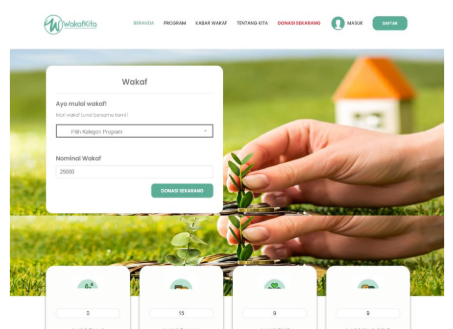
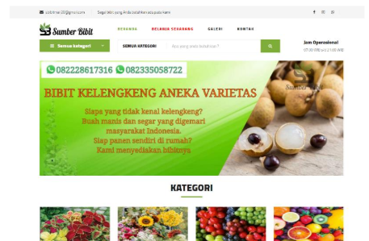
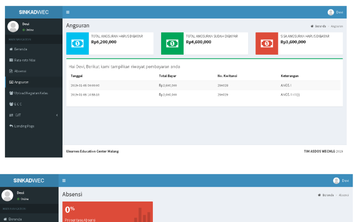
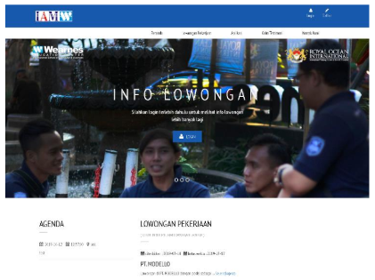

I’m a full‑stack developer focused on web applications—shipping pragmatic solutions, collaborating well with teams, and balancing performance, clarity, and long‑term maintainability.

Secure donation flow with Midtrans integration, real-time transaction tracking, and admin reporting.

Scalable product catalog, shopping cart, and checkout system with payment gateway integration.

Student, course, and academic record management with role-based access and dashboard insights.

Job listing management, applicant tracking, and employer dashboard with streamlined workflows.
Professional company profile website with service showcase and responsive layout.
Tools I work with regularly. The focus is on practical delivery and maintainable solutions—no hype, just what I use to ship.
Selected public repositories that reflect my practical approach to web development, clean structure, and maintainable code.
Blast message using whatsapp web
Record gift from tiktok live
Local development environment using Docker Compose.
Whatsapp web API.
Management inventory office and product selling.
If you’re building a product and need a reliable engineer who cares about quality, scalability, and delivery, I’m happy to contribute. I blend into existing teams and help move projects forward with clean code, thoughtful architecture, and steady execution.
Loop me into your project when you’re ready to take it further.
Available for short-term collaboration or long-term engagement.